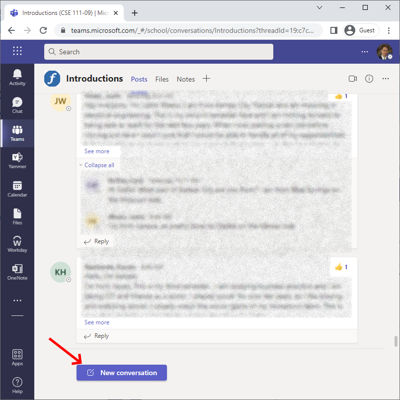

Sign into Microsoft Teams
If you have a BYU-Idaho email address, then you already have a Microsoft Teams account. You don’t need to create a new account. Follow these steps to sign into Teams.
- Open https://teams.microsoft.com in your browser.
- Enter your BYU-Idaho email address in the text field below the words “Sign In” and then click the “Next” button.
- Clicking the “Next” button should cause your browser to open the BYU-Idaho login page. In the BYU-Idaho login page, enter your netid and password and then click the “LOGIN” button. Your netid is the account name that you use to sign into I-Learn.
- After you login to the BYU-Idaho page, the Microsoft Teams online app will open in your browser. In the Microsoft Teams online app, click the “Teams” icon.
- Clicking the “Teams” icon should cause your browser to open a list of teams that you’re enrolled in. Click the CSE 111 team icon which will open our CSE 111 section’s Team.
- In the list of channels, click the word “Introductions” to open the Introductions channel.
- Near the bottom Microsoft Teams online app, click the “New conversation” button and then enter your introduction.